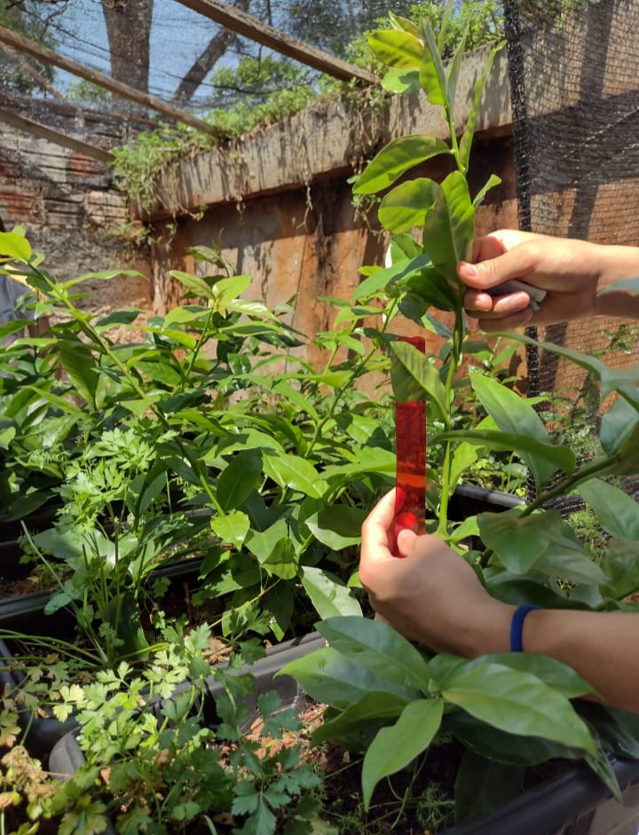

- CEJPC
- Colégio Estadual James Patrick Clark


DESENVOLVIMENTO DE ORA-PRO-NÓBIS EM DIFERENTES TIPOS DE ADUBOS ORGÂNICOS 
A biotecnologia verde é a aplicação de técnicas biotecnológicas em plantas para modificar características, aumentar nutrientes, resistência, criar espécies mais resistentes a agrotóxicos e pragas. A propagação vegetativa, como a utilizada no caso da Ora-pro-nóbis, é uma técnica utilizada para multiplicar plantas de forma assexuada, capturando os ganhos genéticos. A Ora-pro-nóbis é uma planta nativa da América Latina, conhecida por seu valor na medicina popular brasileira. Suas folhas possuem alto teor proteico, minerais e vitaminas. É uma hortaliça não convencional, seu consumo pode fornecer substâncias nutritivas e antioxidantes à dieta.
Resultados e Discuções
As plantas cultivadas utilizando esterco de galinha tiveram o melhor desempenho. O esterco de vaca, e o esterco de carneiro também tiveram um desenvolvimento significativo, enquanto o húmus de minhoca apresentou resultados menos satisfatórios. O grupo de controle teve um bom desenvolvimento das raízes, mas não da parte aérea (folhas e caule). Portanto, o tipo de adubo contendo diferentes concentrações de nutrientes, influenciou significativamente no crescimento da planta.
Conclusão
As plantas cultivadas com esterco de galinha foram as que apresentaram maior crescimento da parte aérea, enquanto as que foram cultivadas em húmus apresentaram o menor desenvolvimento. Com relação as raízes as plantas cultivadas sem adubo (controle) apresentaram um maior desenvolvimento, enquanto as plantas cultivadas com esterco de carneiro apresentaram o menor desenvolvimento.